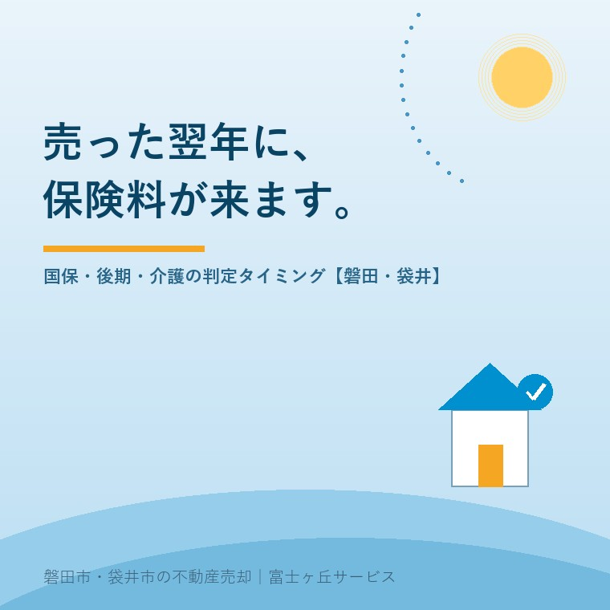

2026年8月7日｜カテゴリ：コスト・税・制度

この記事の要点
Q. 実家を売って、譲渡所得税は払いました。もう終わりだと思っていたら、翌年の夏に国民健康保険税の通知が来て、金額を見て青くなりました。これは何なのでしょうか。
A. 譲渡所得は、翌年度の保険料の計算にも使われます。国民健康保険税・後期高齢者医療保険料は「前年の総所得金額等」、65歳以上の介護保険料は「前年の合計所得金額」で決まるからです。ただし救いがあって、3,000万円特別控除が使えた場合は、控除を引いたあとの金額で判定されます。だから多くの実家売却では影響しません。問題は特例から外れたときで、そのときは国保税が上限（磐田市・令和8年度は年96万円）まで跳ね、介護保険料も最上位段階まで上がることがあります。そして見落とされがちなのが、毎年8月1日に切り替わる介護の負担割合と、施設の食費・居住費の補助（負担限度額認定）。こちらは預貯金の額でも判定されるため、売却代金が入った時点で影響します。磐田市・袋井市・森町では、介護施設の運営から不動産事業を始めた富士ヶ丘サービスのような「介護×不動産」専門の会社に相談するという選択肢があります。
「税金の話は税理士さんに聞きました。手取りも計算しました。それで終わりだと思っていたんです」──実家を売られたあと、翌年の夏に電話をいただくことがあります。7月に届く納税通知書を見て、初めて気づかれるのです。
売値ではなく手取りで考える実家の売却では、印紙税・仲介手数料・抵当権抹消・譲渡所得税を差し引いた「手取り」の出し方をお話ししました。今日はその続編にあたる「翌年に来るお金」です。譲渡所得税と違って先に納める仕組みがないぶん、忘れたころに来ます。
公的な保険料は、ほとんどが前年の所得をもとに、翌年度（4月〜翌年3月）分として計算されます。磐田市の国民健康保険税でいえば、令和8年度の税額は令和7年1月〜12月の所得で決まる、という建て付けです。
ですから、2026年（令和8年）8月に実家を売った場合、影響が出るのは2027年度（令和9年度）分。実際に通知が届くのは、2027年7月ごろになります。
| 時期 | 起きること |
|---|---|
| 2026年8月 | 実家を売却。譲渡所得が発生する |
| 2027年2月16日〜3月15日 | 確定申告（譲渡所得税・復興特別所得税） |
| 2027年6月 | 住民税（譲渡所得分）の通知・納付が始まる |
| 2027年7月ごろ | 国民健康保険税・後期高齢者医療保険料・介護保険料の決定通知が届く（令和9年度分） |
| 2027年8月1日 | 介護保険負担割合証・負担限度額認定証が切り替わる |
| 2028年7月ごろ | 令和10年度分。売却の影響が消え、元の水準に戻る |
逆にいえば、上がるのは原則として1年度だけです。これは大事な救いなので、まず覚えてください。ずっと続くわけではありません。
影響を受けるのは、会社の健康保険（協会けんぽ・組合健保）ではない方です。給与から天引きされる健康保険料は標準報酬月額で決まるので、不動産を売っても変わりません。上がるのは次の3つです。
| 保険 | 対象 | 算定のもとになる所得 | 磐田市・静岡県の率（令和8年度） |
|---|---|---|---|
| 国民健康保険税 | 74歳以下で自営業・無職・年金生活の方 | 基準総所得金額＝総所得金額等−43万円 | 医療分6.25％／後期支援金分2.4％／介護納付金分2.0％／子ども・子育て支援金分0.27％ |
| 後期高齢者医療保険料 | 75歳以上（一定の障害がある65歳以上を含む） | 前年の総所得金額等−43万円 | 所得割9.35％／均等割51,100円／賦課限度額85万円 |
| 介護保険料（第1号） | 65歳以上の全員 | 前年の合計所得金額と住民税の課税状況 | 基準額 年67,200円（月5,600円）の13段階制 |
国民健康保険税には限度額があります。磐田市の令和8年度は医療分67万円・後期支援金分26万円・介護納付金分17万円・子ども子育て支援金分3万円。所得がどれだけ増えても、この上限で止まります。止まるとはいえ、上限まで行けば相当な金額です。
磐田市の税率で計算してみます（1人世帯・軽減判定は考慮しない概算）。
| 通常の年 | 売った翌年度 | |
|---|---|---|
| 基準総所得金額 | 約27万円 | 約1,067万円 |
| 医療分 | 約62,000円 | 670,000円（限度額） |
| 後期高齢者支援金分 | 約24,000円 | 260,000円（限度額） |
| 子ども・子育て支援金分 | 約2,500円 | 30,000円（限度額） |
| 国保税 合計 | 約9万円 | 96万円 |
| 介護保険料（第1号） | 約6万円 | 161,280円（第13段階） |
| 合計の増加額 | およそ100万円 | |
数字の大きさに驚かれたと思います。ただし、これは「3,000万円特別控除が使えなかった場合」の話です。次がいちばん重要な節になります。
ここが実務でいちばん誤解されている点です。国保・後期・介護のいずれも、土地建物の譲渡所得については、特別控除を差し引いたあとの金額で判定します。磐田市も介護保険料のページで「長期譲渡所得および短期譲渡所得にかかる特別控除の適用がある場合は、特別控除後の額となります」と明記しています。
つまり──
実家の売却では、多くの場合これで消えます。心配しすぎる必要はありません。気をつけるべきは、特例から外れる次の4パターンです。
| 外れるパターン | 内容 |
|---|---|
| ①空き家特例の要件を満たさない | 昭和56年5月31日以前に建築された家屋でない／区分所有建物である／相続開始直前に被相続人が一人で住んでいなかった／相続開始から3年を経過する日の属する年の12月31日を過ぎた／耐震改修も取壊しもしていない、など |
| ②相続人が3人以上 | 令和6年1月1日以後の譲渡で、被相続人居住用家屋等を取得した相続人が3人以上の場合、控除額は1人2,000万円に縮小 |
| ③貸していた・事業に使っていた | 相続後に賃貸に出した、駐車場にした等は空き家特例の対象外。実家を貸すという選択を採る場合は、出口の税と保険料まで含めて考える |
| ④利益が控除額を超える／取得費が不明 | 取得費を示す書類が無いと概算取得費（売却価額の5％）しか使えず、譲渡所得がふくらむ。取得費の記事で書いたとおり、ここは事前の書類探しで大きく変わる |
もうひとつ。損が出た場合でも、保険料は下がりません。土地建物の譲渡損失は、原則として給与や年金など他の所得と通算できないためです（居住用財産の買換え等の特例に該当する場合を除く）。「安く売ったから保険料も下がるだろう」は成り立ちません。
介護施設を運営してきた立場から申し上げると、ご家族の家計に本当に効くのは、保険料そのものより介護サービスの自己負担のほうです。次の2枚は毎年8月1日に切り替わります。
7月下旬に届き、有効期間は8月1日から翌年7月31日まで。前年の所得で判定されます。
| 割合 | 本人の合計所得金額 | 年金収入＋その他の合計所得金額 |
|---|---|---|
| 3割 | 220万円以上 | 単身340万円以上／65歳以上が2人以上の世帯は463万円以上 |
| 2割 | 160万円以上 | 単身280万円以上／2人以上の世帯は346万円以上 |
| 1割 | 上記に当たらない方（住民税非課税・生活保護受給者を含む） | |
特別養護老人ホームや老健の利用料が1割から3割になれば、単純に負担は3倍です。月10万円のご利用なら月30万円。1年間続きます。
こちらのほうが、実家売却との相性が悪い制度です。施設に入っている方の食費と居住費を軽減する仕組みで、世帯全員が住民税非課税であることに加えて、本人と配偶者の預貯金等の額で段階が決まります。
| 段階 | おおむねの所得要件 | 預貯金等の要件（単身／夫婦） |
|---|---|---|
| 第2段階 | 年金収入等80万9千円以下 | 650万円以下／1,650万円以下 |
| 第3段階① | 年金収入等80万9千円超〜120万円以下 | 550万円以下／1,550万円以下 |
| 第3段階② | 年金収入等120万円超 | 500万円以下／1,500万円以下 |
お気づきでしょうか。実家を売った代金が親名義の口座に入った時点で、この資産要件を超えてしまうのです。しかも保険料と違って「翌年度から」ではありません。次の更新（8月1日）で認定が外れます。食費と居住費の軽減が消えると、施設によっては月に数万円単位で自己負担が増えます。
あわせて、月々の自己負担に上限を設ける高額介護サービス費の区分も動きます。住民税非課税世帯なら月24,600円（または15,000円）だったものが、課税されると月44,400円、課税所得380万円以上なら月93,000円、690万円以上なら月140,100円。譲渡所得が乗る年は、この階段を一気に上がることがあります。
医療のほうも同様で、後期高齢者医療の窓口負担割合は、同じ世帯の被保険者に課税所得28万円以上の方がいて、かつ「年金収入＋その他の合計所得金額」が単身200万円以上（2人以上なら合計320万円以上）だと2割。さらに課税所得145万円以上などの要件に当たると3割（現役並み所得）になります。高額療養費の自己負担限度額の区分も、同じように上がります。
制度の話が続きましたので、当社が磐田市・袋井市で実際にお勧めしている段取りを、3つだけ書きます。
磐田市の介護保険料は令和6年度〜8年度で基準額が年67,200円（月5,600円）、13段階。最上位の第13段階は年161,280円で、基準額の2.4倍です。国民健康保険税は令和8年度で医療分の所得割6.25％、均等割26,200円、平等割19,200円。後期高齢者医療は静岡県後期高齢者医療広域連合の2026・2027年度の料率で、所得割9.35％・均等割51,100円・賦課限度額85万円。ご相談は磐田市国保年金課（0538-37-4863）と介護保険課が窓口ですが、「売ったらどうなるか」の事前試算までは、市役所ではしてくれません。そこは私たちの仕事だと思っています。
富士ヶ丘サービスは磐田市見付に事務所を置き、介護施設の運営から不動産に入った会社です。売買契約書と介護保険負担割合証を、同じ机の上に並べて見られる——それが当社の一番の特徴です。売却価格の話だけをして終わりにはしません。
実家を売るという決断は、ご家族にとって何度も経験することではありません。だからこそ、「売ったあと1年半のお金の流れ」まで見通してから判子を押していただきたいのです。買取か仲介かの判断も、税と保険料まで含めると答えが変わることがあります。
ふじがおか実家カルテでは、想定売却価格だけでなく、翌年度の保険料への影響と、介護の負担割合が変わる可能性まで含めて一冊にまとめてお渡ししています。お盆にご家族が集まる前に、たたき台としてお使いください。
ふじがおか実家カルテ｜売ったあと1年半まで見通します
介護保険負担割合証を、一緒にお持ちください。
登記情報・公図・固定資産税通知書に加え、介護保険負担割合証や年金額のわかるものをお持ちいただければ、想定価格と手取りに、翌年度の保険料・介護の自己負担の変化まで加えて宅建士が試算します。
本記事は2026年8月7日時点の公開情報に基づく一般的な解説です。保険料の税率・料率・段階は年度ごとに、また市町村・広域連合ごとに異なります。試算はモデルケースであり、軽減判定・世帯構成・他の所得により実際の金額は変わります。介護保険負担限度額認定の要件および高額介護サービス費の区分は制度改正により変更されることがあります。必ず磐田市・袋井市の最新の案内でご確認ください。税務の判断は税理士に、介護保険の適用は市の介護保険課・ケアマネジャーにご確認ください。個別のご相談は当社までどうぞ。

この記事を書いた人：大石浩之（宅地建物取引士）
磐田市・袋井市・森町で「介護×相続×空き家」に特化した不動産売却支援を行う富士ヶ丘サービスの代表取締役・宅地建物取引士。介護施設の運営から不動産事業を始めた経験をもとに、売主とご家族が困らない売却を一件ずつお手伝いしています。プロフィール
磐田市・袋井市・森町の実家じまい・相続空き家相談
固定資産税通知書だけでも相談できます
住所があいまいでも、通知書や写真から名義・道路・農地・残置物の確認順を整理します。カルテ申込またはLINEで状況を送ってください。
富士ヶ丘サービス株式会社／静岡県磐田市見付5789番地1／TEL:0538-31-3308／静岡県知事 (2) 第14083号／代表取締役・宅地建物取引士 大石 浩之